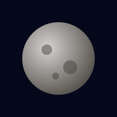
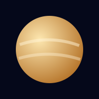
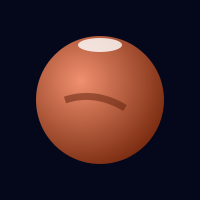
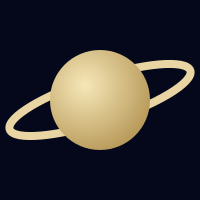
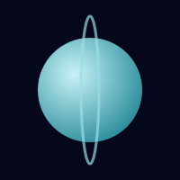

Planéty Slnečnej sústavy
Tabuľka planét
| Planéta | Typ | Priemer (km) | Vzdialenosť od Slnka (mil. km) | Priemerná teplota (°C) |
|---|---|---|---|---|
 Merkúr |
terestrická | 4 879 | 58 | 167 |
 Venuša |
terestrická | 12 104 | 108 | 464 |
| Zem | terestrická | 12 742 | 150 | 15 |
 Mars |
terestrická | 6 779 | 228 | −65 |
 Jupiter Jupiter |
plynný obor | 139 820 | 778 | −110 |
 Saturn |
plynný obor | 116 460 | 1 434 | −140 |
 Urán |
ľadový obor | 50 724 | 2 871 | −195 |
| Neptún | ľadový obor | 49 244 | 4 495 | −200 |